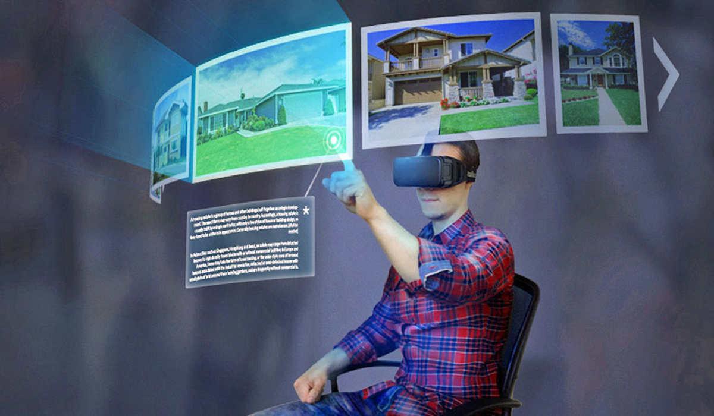
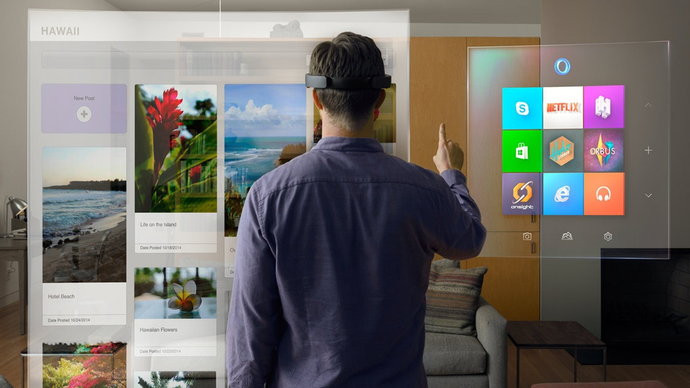
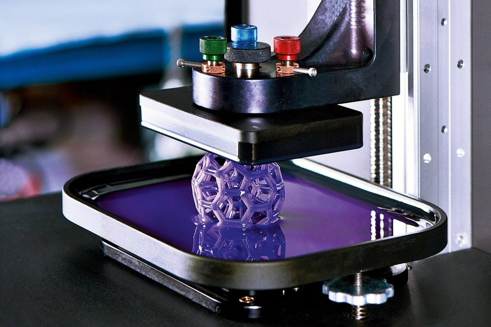
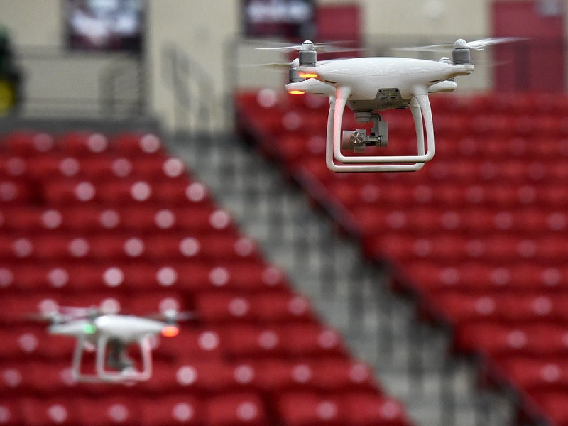
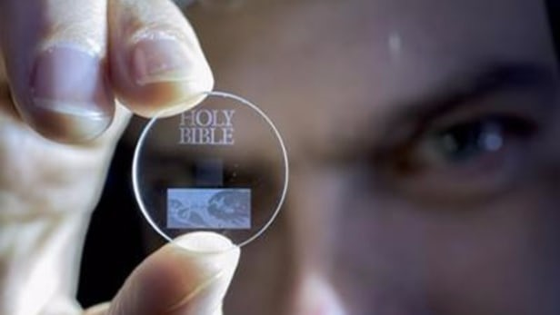
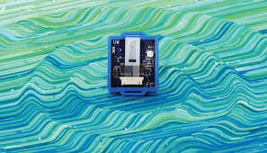

Virtual Reality
Augmented Reality
3D Printing
Drone
UsBidi
Autopilot
Eternal Data Storage
Artificial Intelligence
Blockchain
Power from Air
Virtual Reality
VR represents the creation of virtual world which users can interact with. VR use realistic images, sounds and other sensations that replicate the real environment and stimulate user’s physical presence in the virtual world. VR is said to be the year of 2016. Playstation VR, HTC Vive and Oculus Rift are the popular VR headsets used by many users.
Gaming is one of the most obvious, attractive and powerful examples of virtual reality. With the use of virtual reality technology, people are able to have wonderful experiences in the virtual 3D spaces which are the world that people dreamt to live in. In the virtual world, that we are experiencing are seem similar in real world, just like we are exactly doing the things in that place.
For minecraft players, Oculus Rift launches minecraft in VR version in August 2016 which allows players to create their own world with their creativity and ideas. This gives players real experiences in building their own dreaming world.
Virtual reality is a powerful technology which can be used in therapy. At the University of Louisville, psychiatrists use VR in cognitive behaviour therapy to treat patients with social anxieties or phobias of things such as flying, public speaking, or heights. Patients are going to confront their phobias in the computerized virtual environment which is full under control. The controlled environment exposes patients to stimulations and patients are coached on overcoming their fears instead of avoiding fears.
Spiders phobia is one of the common phobia treated by virtual reality. By using the VR technology, patients are able to see virtualized spider is in front of them, psychiatrists will use spider model to let patients to touch it in order to enhance the real feelings of patients. Once patients keep repeating the same treatment, they are able to break through the fears.
Traditional teaching method is writing notes on blackboard and using books. When technology is developing, teachers are able to display slides on screen while teaching. But now, students are able to use VR in their learning experience.
On 14 April 2016, an operation is performed by Shafi Ahmed using VR at the Royal London hospital. Through Medical Reality website and the VR in OR apps, everyone can take part in operation in real time. For medical students, they are able to watch the whole operation, just like real experience. Besides, students also can see the structure of organs and plant cells in full, clear form in the virtualized environment.
Technology is changing the ways of promoting and experiencing the cars. In automotive industry, VR is used to for displaying the car models to customers and allowing customers to experience their cars with the use of VR headsets. Entire model line-ups which are in the past, current and future can be shown with infinite number of optional configurations.
REWIND creates fully interactive Ture-VR car configurator and stimulator for the Oculus Rift OK2 headset for the launch of Lexus NX. The latest CGI technology allows customers to configure every NX aspect to their own specification and take it on test drive. In the virtual environment, customers can customize the size, colour and format of cars according to their favourite styles by touching the buttons.
Want to go travelling but busy with working or studying stuffs? VR is going to accomplish your wish. The virtualized environment is designed based on the landscape of destinations. In the virtual world, users can watch the landscape with 360 degrees just like looking around the destinations in real time.
One of the most popular VR travellers is Street View in Google Maps. By dropping the little man in certain destination on map, users can view the environment in all directions by dragging the mouse. This features allow user to get the correct direction before going there and minimize the risk of getting lost if users are new to the destination.
Augmented Reality
Along with VR, AR is also one of the strongest technology which is going the changes the trend development of the world. AR is the combinations of VR and real life. A virtualized image is created with the contents in the real world with the applications.
In July 2016, Pokemon Go which is the most successful AR games developed by Niantic and Nintendo brings a heat wave in society. In the game, players can catch pokemons in the real world. Pokemon Go provides AR experience to players and this become one of the attractive factors why people in the world are going crazy for it.
AR also provides amazing experiences for all card duellers especially for those Yu-Gi-Oh fans. AR is used to display the cards images when summoning. Although the AR is still in the development process, this already fulfil the dreams of card duellers of summoning their favourite monsters and acting cool like the characters in the anime.
In order to maximize the performance in education, AR is compatible to be used. AR makes the learning process becomes more interesting.
Instead of reading the boring notes in black and white, AR apps are going to help students to understand the concepts studied easier and faster by generating the virtual image on screen. Moreover, students can access augmented models representing anything from a cell of organism to structure of building with a simple scan. This experience creates complete learning cycle.
AR also can allow people to superimpose computer-generated images created in Computer Aids Design(CAD) or building information modelling(BIM) software on a user’s view of real world which generates augmented view. Land developer can use this feature to determine what type and structure of building design should be built in certain area including the size of area required by the building. Besides, this also allows developer to understand the building process of buildings before execution in order to figure out the problem that may be countered during the building process as well as facilitate the calculation of materials cost.
Cleveland Museum of Art combine the uses of AR with Kinect natural motion technology to allow visitors interact with and create immersive at experiences. This organization has launched their AR app which is ArtLens 2.0 that uses image-recognition software to recognize a selection of two-dimensional artworks. Besides, ArtLens also provides additional curatorial and interpretive piece content. The artworks can be scanned from 50 feet away which enables visitors to review facts on the piece and gather information before approaching the artworks.
Do not know what will your living room looks like when there is a new furniture is located at certain place? IKEA which is a popular furniture manufacturer uses AR to help users to generate a virtualized image to show the furniture position in the place which users want to locate the furniture.
Feel annoying of changing the clothes frequently when trying same type of clothes with different colours? Uniqlo in United State in Union Square, San Francisco offers customers unique ability to imagine themselves in a range of colour choices of single silhouette. This “virtual dressing room” used Kinect’s colour-changing engine and half-mirror touch panel to perform the function including taking photo for customers and sharing to social media.
3D Printing
3D printing which is called additive manufacturing is a process of making three dimensional solid objects from a digital file. In an additive process an object is created by laying down successive layers of material until the object is created. Each of these layers can be seen as a thinly sliced horizontal cross-section of the eventual object.
In order to increase the ability of designing large variety of customized homes and buildings, 3D printing is used in construction field. With the use of 3D printing, construction waste is able to be saved up to 60% and reduce the production time by 50% to 70%.
A new technique for concrete construction using robotics and metal mesh is created by Swiss researchers who are working at “Swiss MIT”. This new technique is known as Mesh Mould. The steel reinforcement is surrounded by timber formwork to gives the concrete its final shape in the building process. With standardized structure, these formworks are reusable for multiple times. The technology is further developed by combining the functions of formworks with reinforcement into steel wire grid which is manufactured by robot based on computer model. This development resolves the issues of shape limitations in designing building and separated formworks are no longer needed. This gorgeous invention makes Swiss researchers win the Swiss Technology Award.
Food ink is a gourmet experience in which all food, utensils and furniture are produced completely using 3D printing technology. The primary materials used by the 3D printing is in the paste form. The robotic limb on the 3D printers has greater precision than any human hand and so can produce intricate designs with the food. The robotic limb facilitates control of the molecular gastronomy of the printed food which can ensure the food is made in flawless shape. All the food only requires 3 to 5 minutes to be made. With 3D printing, food crisis is able to be solved.
Bioprinting is a technology which use cells as material in printing. Bioprinter is a machine which manufacture the cell using the bioprinting technology. Most bioprinters output dissolvable gel to give support and protection to cells during printing. A three years old girl from Northern Ireland has become the first to possess life-saving adult kidney transplant using 3D printing. Lucy Boucher suffers heart failure which starve her kidneys of oxygen. Surgeons at London's Guy's and St Thomas' and Great Ormond Street Hospital performs the transplant for her. Before the transplantation, the surgeons make the detailed models of kidney donated by Lucy’s father and her abdomen with 3D printer in order to map out the procedure with precision.
In November 2016, NASA has executed 3D Printing In Zero-G Technology demonstration. NASA is going to test the 3D printer using relatively low-temperature plastic feedstock in order to establish an on-demand machine shop in space, a critical enabling component for deep-space crewed missions and in-space manufacturing. 3D print requires the production of 3D multi-layer objects which generates data including operational parameter, dimensional control and mechanical properties to enhance understanding of 3D printing process in space for security issue of integrating into Microgravity Science Glovebox (MSG). To acquire knowledge of strength variance and feedstock age implications, many copies of coupons are selected for printing. Each printed part is compared to duplicate part printed on Earth. Data obtained are used to refine Earth-based 3D printing technologies for terrestrial and space-based applications.
The prototype of 3D printed THOR aircraft is manufactured at the International Aerospace Exhibition (ILA) in Schoenefeld in June 2016. Stratasys who is 3D printing machinery maker demonstrates one application that allow airline to pick made-to-order airplane interiors. The printer with the new 3D printing technology is able to create unlimited size components by turning the manufacturing place from the standard horizontal to vertical. 3D printing employs sophisticated computer simulations and software to direct print object from powdered, molten and filament materials including nylons, resins, clay, thermoplastic and metals. 3D robotic demonstrator utilizes Siemens software to position and rotate item in the printing process. The process allowing for precise movements on eight-axis motion system is suited to produce lightweight components which must be very strong
Drone
Drone is known as unmanned aerial vehicle (UAV). Typically, drone is a small, flying machine. The aircrafts may be remotely controlled or can fly autonomously through software-controlled flight plans in their embedded systems working in conjunction with onboard sensors and GPS. In the past, drone is used for military purpose in intelligence gathering or acts as weapon platform. But now, the roles of drones can range from surveillance, search and rescue to personal drone as well as business drone-based photography and even delivery services.
With cutting edge design, this drone provides simultaneous controlling features which allows two controllers to control the flight of drone and camera separately at the same time. Moreover, this drone adapted with camera can provide unprecedented level of control for recording and snapping photo. Users can record 4K video at 24-30FPS, or 1080p at up to 60FPS and snaps photos at 12 megapixels with this drone. This drone also uses Trackimo Tracker Technology to prevent drone from ‘missing’ from users’ sight. The DJI Inspire 1 includes case holds 6 batteries, live HD view and 64 GB SD card.
The Yuneec Q500 is capable of recording 1080P surveillance footage at 60FPS and snaps still photos at 16 megapixels. With 3-Axis Gimbal, this drone is able to obtain the perfect shot. It has a wide angle 130-degree field of view lens. This drone is controlled by using RC joystick. Built-in Android mobile device which has 4.5’’ touchscreen is appended to this drone to view FPV videos. Yuneec Q500 includes 32 GB SD card and also supports up to 128 GB card. The Q500 also comes with two stellar 5400mAh flight batteries that allows for up to 25 minutes of flight time per charge.
This drone is capable to record full 1080P HD videos at 30 FPS and can take still at 14 megapixels. By using smartphone as controller, this drone is able to operate within the range of 100 meters. FreeFlight 3 is application design for Parrot BeBop which can allows users to control the video quality and camera tilt as well as enabling drone to landing by using buttons. Anti-vibration algorithms are the technology applied in this drone which can make drone to keep steady during recording phase although this drone is not equipped with gimbal.
This drone is able to capture full 4K ultra HD video at 30 fps, with 12 MP clear photos. Besides, it possesses whopping 28 minutes of flight time per battery and maximum control range of 72km. Zooming 44 mph is the maximum speed of DJI Phantom 4. This drone is capable to move the specific location based on users’ requirements by just double tapping the spot on screen. This drone is also appended with Visual Tracking feature which can command drone to follow certain people. Sport mode is the latest feature added which can increase its agility and speed of 25%.
Blade Chroma is an ascendant of Blade Nano QX which is equipped with high-end 4K camera. It comes with full 30 minutes of flight time per battery. It also has Smart Mode for first-time pilots. For instance, newcomers can move the drone in any direction as they are moving the control stick regardless of the direction drone is facing. For security issue, this mode creates SAFE circle barrier which keep a safe distance between itself and people. In order to focus on solely controlling the camera, it is compatible with follow-me mode which allows pilots to set their distance and altitude. It also contains Tracking Mode that enables drone to follow whoever with ST-10+ controller.
UsBidi
The most intelligence charger in the world which double up charging speed and prolong your battery life.
Smartphone is the most common device used by people in current year. Playing games is one of the favourite activity conducted by people. The most problem faced is playing games consumes much battery power compared to other task applications in phone. UsBidi is created to allow people to experience phone fast-charging which can save up a lot of time. Moreover, UsBidi also prevent the problem of getting tangle which is very annoying to people.
UsBidi is also compatible with intelligence mode which will automatically shut off power completely once fully charged. If people do not unplug the charger as phone is fully charged, charger will experience elevated temperature and mini-charging cycle which can damage the battery capacity and shorten its life. For the users who always charge their phones during the sleeping time, UsBidi will be your best tool ever. UsBidi is going to extend the battery life with healthier battery and long-lasting charges. For different type of device, there are different type of connector used. Lightning version is designed for Apple device whereas Micro USB version is indicated to Android or Windows device.
Autopilot
Feeling tired after working or studying and have to drive? Tesla’s Model P90D will solve the problem for you.
P90D is manufactured with autopilot technology in which the car can be functioning and keep working without needing a driver. This model is equipped with high advanced sensors which can keep safe distance between cars. The car will moderate the speed by itself which accelerates the speed when there is a long distance between it and car that is in front of it and vice versa. .
P90D even notices the situation which needing to brake. The transition from cruising at 90mph to dead stop is extremely smooth. The car hauled itself down with a combo of regenerative braking and actual-for-real braking, coming to a halt about a meter behind the stopped car in front of it. The brake interval can be set by users to produce smaller inertia as possible.
When there is a curve on road, the car will decelerate the speed and accelerate smoothly back out the turn if car is going very fast to negotiate the curve. If users want to change the lane, all the things need to do is just triggering the left or right signal. The car will check the lane that users want to switch into is not be occupied and accelerate slightly then make the change.
For security, the car will alert users if users remove their hands from wheel for about 90 seconds. The car will sound alert tone and display dialog on center console to remind users to grasp the wheel. If users ignore the alert, the car will disengage the auto-cruise and auto-steer and finally slow to stop. The car with autopilot technology is to be trusted that car accidents can be avoided completely compared to driving car manually.
Eternal Data Storage
Using nanostructured glass, scientists from the University’s Optoelectronics Research Centre (ORC) have developed the recording and retrieval processes of five dimensional (5D) digital data by femtosecond laser writing. The technology was first experimentally demonstrated in 2013 when a 300 kb digital copy of a text file was successfully recorded in 5D.
At University of Southampton, scientists successfully develop “Superman crystal” which accomplish the request for high-density immutable storage. The glass disc has capability to store up to 360TB of data and able to last almost forever at room temperature.
A femtosecond laser delivers ultrashort light pulses onto a piece of quartz, creating microscopic dots which are nano-grantings in the quartz to record data. Each dot encodes 3 bit of information such as dot position, intensity and polarization of light in three layers of quartz. The scientists behind this innovation increases the storage capacity by adding additional polarization states and importance improvements to write times.
The self-assembled nanostructures change the way light travels through glass by modifying polarization of light that can then be read by combination of optical microscope and a polariser. This concept is similar to that found in Polaroid sunglasses.
The Southampton team is still actively looking for industry partners to commercialize the new technology. The use of nano-structured glass data storage is expected to be approached to national archives, museums, and libraries. They have already saved versions of the Universal Declaration of Human Rights, Newton’s Opticks, the Magna Carta as well as the King James Bible in 5D storage, and the possibilities for other kinds of data storage and sharing are quite literally limitless. Any data stored to these disks will outlast us all.
Artificial Intelligence
AI is the creation of intelligence machine that able to react and work like human. AI is accomplished by studying how human brain thinks, and how humans learn, decide, and work while trying to solve a problem, and then using the outcomes of this study as a basis of developing intelligent software and systems.
In September 2016, Facebook CEO, Mark Zuckerberg attempts to demonstrate the artificial intelligence (AI) project. He desires to build an AI which has capability of controlling his home including temperature, lighting and gate. At the current stage, the AI only responds to him only.
Google Home which is AI product designed by Google and released on 4 November 2016 capable to tell users the latest news and weather, keep track of appointment, control smart home as well as playing music. The top angled of device is touch sensitive surface which can be used to change the volume, start a request, play or pause music and turn off alarm or timer. Instead of controlling the Home by touching its surface, users can command the Home with their voice. Home is able to get knowing users’ thought. For example, when you are saying that you need a coat, Home will tell you the current weather report. Home is designed for personal usage which can only allow one account linked at a time.
With AI technology, machine learning is introduced which computer will learn how to do tasks such as image recognition and text translation by itself without needing programmer to teach it. Google DeepMind’s AI program, Alpha Go used machine learning to defeat human opponent. Deep learning which builds complex mathematical structure called neural network based on cast quantities of data is the most powerful form of machine learning being used today. TensorFlow is an open-source software suit introduced by Google which is used by the researches to understand the powerful models they create. Google is also supporting the highly success of Keras whereas Facebook is supporting the development of 2 Deep Learning frameworks such as Torch and Caffe. Neural network-based machine learning will instead prove to be a technology like any other, useful in some areas, useless in others, and eventually doomed to be rendered obsolete in turn by a future innovation.
AI is going to help us to reduce the error in order to increase the possibility of reaching higher accuracy. AI also facilitates the exploration in all fields. Since they are machine-body which have more resistant and able to endure the space and hostile atmosphere, they can be used in mining and fuels exploration process. Moreover, the complex machines can be used in exploring the ocean floor which overcomes the limitation of human.
As we know that, AI plays important role in assisting our daily life. When taking a picture, the algorithm of AI detects and determines the face of people. Besides, it also functions to tag the individuals when we are posting photographs on the social media sites such as Facebook, Instagram and Weibo. As AI is programmed which does not have any emotion. AI can think more logical and make precise decision compared to human because they are not affected by emotional factor.
Blockchain
Blockchain is a distributed and decentralized transaction ledger. All the transactions are owned, managed and maintained by each node. Graphical depiction is the origin of the term of blockchain which means how hashed transactions are added sequentially and immutably to the ledger.
Have you ever heard of bitcoin? Bitcoin is cryptocurrency, created and held electronically on your PC or in a virtual wallet. Mining bitcoin which discover new bitcoins is going to be the popular activities done by people to make money. However, bitcoin is virtual object which does not have any transaction and not be controlled by any party.
The time is changed. Blockchain is underlying the use of bitcoin and has the ability of having permanent records transaction and allowing people to view the changes online in real time. Digital signatures, signed blocks of transactions and distributed shared ledger are the three useful elements included in blockchain. With digital signatures, the possession of private key, message resources and modifications of message are able to be verified as well as allowing fine-grained version control of documents and contracts. Preserving the sequences of transaction, allowing fine-grained access control at the level of transaction and creating continually updated audit traits are the popular functions performed by signed transaction blocks. Since blockchain acts as distributed, shared ledger, a single version of transaction truth can be established easily. Furthermore, blockchain also exposes to the autonomous agents, processes and organizations implied by smart contract technology.
Blockchain facilitates the transfer from property rights to stocks and currencies without the need of third party while offering safety, higher speed and lower costs. This can approach to disintermediation and trustless exchange and strongly reduce counterparty risk.
The block validation system ensure nobody can tamper with records which can provide the highest security to all end users. Blockchain is also known as mutual distributed ledger (MDL) in which blockchain is a kind of permanent database coexisting in multiple locations and shared by community. As blockchain is operating with decentralized networks, blockchain is free from risk of losing data when experiencing failure as a central point and malicious attacks. This provides benefits to all users in term of reliability, longevity and durability.
Many different financial institutes put their high credibility to blockchain due to its high reputation. With blockchain, banks can increase their efficiency in managing transactions. By 2027, about 10 percent of entire global GPD will be stored in blockchains.
Power From Air
Devices that never need charging, cost nothing to run and aren’t limited by the location of external power source. An entire smart city could be devised using numerous sensors that require no upkeep and have no overheads beyond the price of hardware itself. Power from air is imagined to be used to trickle-charge all kind of hardware. All these sound fantasy and these are not just imagination.
In 1989, Nikola Tesla proposed “world system” of giant towers that would form both a global wireless communication network and a mean of delivering electricity over large areas without wires. Current researchers already figure out how electricity forms in the atmosphere and proceed to find the way to pull the electricity right out of the air.
Dubbed Wi-Fi which is a technology of University of Washington is being commercialized. This technology enables battery-free gadgets connected with conventional devices by backscattering Wi-Fi signals. The prototype passive Wi-Fi devices have beamed data as far as 100 feet and made connections through walls. Passive Wi-Fi just 1/10000th as much power as existing Wi-Fi to communicate. For instance, security camera could power its other circuits b using energy harvested from Wi-Fi signals it is backscattering or by feeding on other signals including TV and radio broadcast. Researchers believed that tiny passive Wi-Fi devices could be very cheap to make in which less than a dollar.
With wireless power transmission system, the existing high-tension power transmission line cables, towers and substations between the generating station and customers will be no longer required. The wireless power transmission system facilitates the interconnection of electrical generation plants on global scale. Moreover, the electric energy cost for customers will be reduced as the cost of transmission and distribution become less.